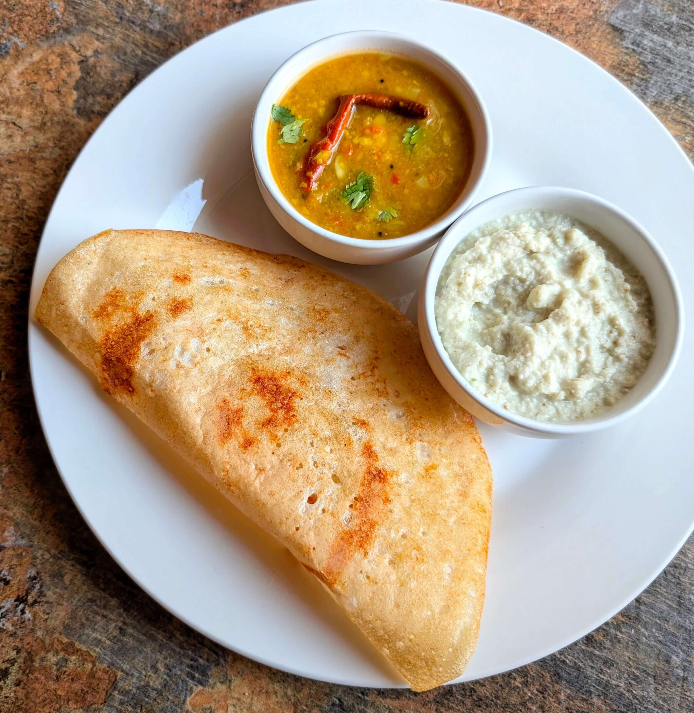

Home
Dosa Recipe

Description:
Dosa is a cherished South Indian delicacy—a thin, crispy crepe made from a
fermented batter of rice and urad dal (black gram). It's traditionally
served hot with accompaniments like sambar and chutney, offering a
delightful blend of textures and flavors.
Ingredients
- 1 cup rice
- 1/2 cup urad dal (black gram)
- 1/4 teaspoon fenugreek seeds
- Salt to taste
- Water as needed
- Oil or ghee for cooking
Steps
-
Soak rice and urad dal with fenugreek seeds in water for 4-6 hours.
- Drain and blend to a smooth batter, adding water as needed.
- Ferment the batter overnight or for 8-12 hours.
-
Heat a non-stick pan, pour a ladle of batter, and spread it into a thin
circle.
- Drizzle oil or ghee around the edges and cook until golden brown.
- Flip and cook the other side briefly.
- Serve hot with sambar and chutney.
- Enjoy your crispy dosa!